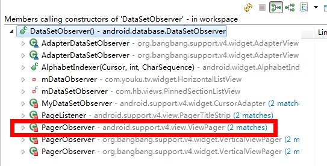

追溯源码解决android疑难问题1–Viewpager之notifyDataSetChanged无刷新
最近项目结束，搞了一次代码分享。其中一位同学分享了一下自己在解决问题过程中的一些心得体会，感觉受益匪浅。整理出来，分享给大家。
建议使用自己编译的android os和虚拟机，这样就可以调试android系统中的任何组件。简单说来，深入android源码，去寻找解决问题的答案。这事儿说起来简单，实际做起来还是有些难度的。我也曾经尝试着去看过，没看一会儿就晕了。
所以还是有针对性的去看源码，效率会高一些。
废话不多说，先看第一个示例。
Viewpager在调用notifyDataSetChanged()时，界面无刷新。
相信很多做过Viewpager的同学肯定遇到过这个问题，这个是bug还是android就是如此设计的，我们不做讨论。总之，它确实影响我们功能的实现了。
可能不少同学选择为Viewpager重新设置一遍适配器adapter，达到刷新的目的。但是这种方法在大多数情况下，是有问题的。
追踪源代码：
为什么调用数据更新的方法，Viewpager却没有更新呢，我们跟进该方法的源代码看一下。
首先查看适配器调用的super.notifyDataSetChanged()，该方法调到抽象基类PagerAdapter.notifyDataSetChanged()中：
/** * This method should be called by the application if the data backing this adapter has changed * and associated views should update. */
public void notifyDataSetChanged() {
mObservable.notifyChanged();
}
注释里说到，当附加在适配器上的数据发生变化时，应该调用该方法刷新数据。该方法调用了一个mObservable .notifyChanged()；
我们继续跟进这个方法，进入DataSetObservable类中，发现这样一段代码：
/** * Invokes {@link DataSetObserver#onChanged} on each observer. * Called when the contents of the data set have changed. The recipient * will obtain the new contents the next time it queries the data set. */
public void notifyChanged() {
synchronized(mObservers ) {
// since onChanged() is implemented by the app, it could do anything, including
// removing itself from {@link mObservers} - and that could cause problems if
// an iterator is used on the ArrayList {@link mObservers}.
// to avoid such problems, just march thru the list in the reverse order.
for (int i = mObservers .size() - 1; i >= 0; i--) {
mObservers.get(i).onChanged();
}
}
}
这都不是重点，重点我们来看这个mObservers的类型是一个抽象类DataSetObserver，里面只有两个未实现的方法，都有谁使用了这个抽象类呢，快捷键 ctrl + alt + H ,在众多的调用者当中，我们发现了Viewpager的身影

进入viewpager，我们终于找到了viewpager中控制数据变更的重点方法dataSetChanged ，这个方法如下：
void dataSetChanged () {
// This method only gets called if our observer is attached, so mAdapter is non-null.
boolean needPopulate = mItems .size() < mOffscreenPageLimit * 2 + 1 &&
mItems.size() < mAdapter.getCount();
int newCurrItem = mCurItem ;
boolean isUpdating = false;
for (int i = 0; i < mItems.size(); i++) {
final ItemInfo ii = mItems .get(i);
final int newPos = mAdapter.getItemPosition(ii.object );
if (newPos == PagerAdapter.POSITION_UNCHANGED ) {
continue;
}
if (newPos == PagerAdapter.POSITION_NONE) {
mItems.remove(i);
i--;
if (!isUpdating) {
mAdapter.startUpdate( this);
isUpdating = true;
}
mAdapter.destroyItem( this, ii.position , ii.object);
needPopulate = true;
if (mCurItem == ii.position ) {
// Keep the current item in the valid range
newCurrItem = Math. max(0, Math.min(mCurItem, mAdapter.getCount() - 1));
needPopulate = true;
}
continue;
}
if (ii.position != newPos) {
if (ii.position == mCurItem ) {
// Our current item changed position. Follow it.
newCurrItem = newPos;
}
ii. position = newPos;
needPopulate = true;
}
}
if (isUpdating) {
mAdapter.finishUpdate( this);
}
Collections. sort(mItems, COMPARATOR);
if (needPopulate) {
// Reset our known page widths; populate will recompute them.
final int childCount = getChildCount();
for (int i = 0; i < childCount; i++) {
final View child = getChildAt(i);
final LayoutParams lp = (LayoutParams) child.getLayoutParams();
if (!lp.isDecor ) {
lp. widthFactor = 0.f;
}
}
setCurrentItemInternal(newCurrItem, false, true);
requestLayout();
}
}
重点看这样一行代码：
final int newPos = mAdapter.getItemPosition(ii.object );
if (newPos == PagerAdapter.POSITION_UNCHANGED ) {
continue ;
}
官方对getItemPosition()的解释是：
Called when the host view is attempting to determine if an item’s position has changed. Returns POSITION_UNCHANGED if the position of the given item has not changed or POSITION_NONE if the item is no longer present in the adapter.
The default implementation assumes that items will never change position and always returns POSITION_UNCHANGED.
意思是如果item的位置如果没有发生变化，则返回POSITION_UNCHANGED。如果返回了POSITION_NONE，表示该位置的item已经不存在了。默认的实现是假设item的位置永远不会发生变化，而返回POSITION_UNCHANGED
解决方案：
所以我们可以尝试着修改适配器的写法，覆盖getItemPosition()方法，当调用notifyDataSetChanged时，让getItemPosition方法人为的返回POSITION_NONE，从而达到强迫viewpager重绘所有item的目的。
具体代码如下：
class SearchAdapter extends PagerAdapter {
private int mChildCount = 0;
@Override
public void notifyDataSetChanged() {
mChildCount = getCount();
super.notifyDataSetChanged();
}
@Override
public int getItemPosition(Object object) {
if ( mChildCount > 0) {
mChildCount --;
return POSITION_NONE;
}
return super.getItemPosition(object);
}